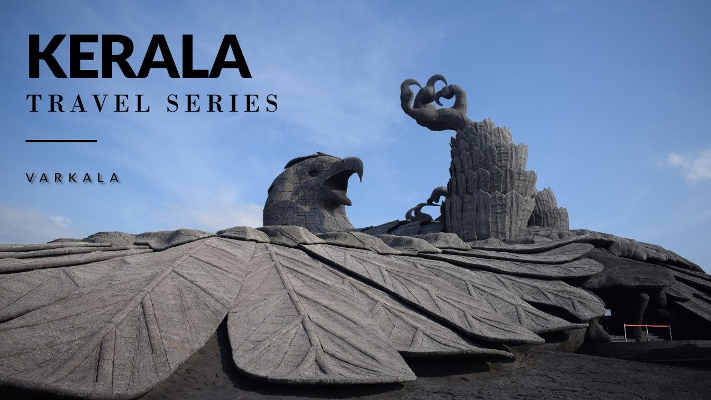
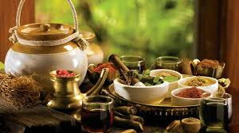

Welcome to Kerala Tourism
🌿"God’s Own Country Awaits You"
💚 Why Choose Kerala?
🚣 Glide through peaceful backwaters on traditional houseboats.
🌅 Witness golden sunsets over Kovalam and Varkala beaches.
🐘 Embrace cultural richness through ancient Kathakali performances and temple festivals.
🏞️ Breathe in the purity of the Western Ghats, a UNESCO World Heritage site.
💍 Say “I Do” in paradise with stunning destination wedding spots across beaches, palaces, and hilltops.
🚁 Take to the skies with heli-tourism and discover Kerala like never before.
🌏 Whether you're a traveler, honeymooner, adventurer, or dreamer — Kerala welcomes you with warmth, wellness, and wonder.
💚Explore the wonders of kerala with us
Kerala, often called "God’s Own Country," is a land blessed with natural beauty and rich cultural heritage. The wonders of Kerala are truly mesmerizing, offering a blend of nature, tradition, and tranquility that captures every visitor’s heart.
- Backwaters of Kerala : The iconic network of serene backwaters, rivers, and lagoons are a unique ecosystem. Cruising on traditional houseboats through these calm waters surrounded by lush greenery is an unforgettable experience.
- Munnar’s Tea Gardens : Rolling hills covered with vibrant green tea plantations stretch as far as the eye can see. The cool climate, misty mornings, and scenic valleys make Munnar a paradise for nature lovers.
- Athirappilly Waterfalls : Known as the "Niagara of India," this spectacular waterfall cascades down amidst dense forests, creating a breathtaking sight and a refreshing ambiance.
- Periyar Wildlife Sanctuary : A haven for wildlife enthusiasts, this sanctuary is home to elephants, tigers, and a variety of exotic species. Boating in Periyar Lake offers a chance to spot animals in their natural habitat.
- Cultural Heritage : Kerala’s rich traditions come alive in its art forms like Kathakali, Theyyam, and Mohiniyattam. The vibrant festivals, temple rituals, and ancient architecture reflect its deep cultural roots.
- Hill Stations and Spice Plantations : Beyond Munnar, places like Wayanad and Thekkady offer scenic hills, wildlife, and aromatic spice gardens that tell stories of Kerala’s spice trade legacy.
- Beaches and Coastal Life : From the bustling Kovalam to the tranquil Varkala cliffs, Kerala’s coastline offers golden sands, surfing opportunities, and picturesque sunsets.
🌿 1. Ayurveda
Kerala is globally renowned for its authentic Ayurvedic treatments. Home to centuries-old wellness centers and herbal practices. Many people visit Kerala solely for rejuvenation therapies and Panchakarma treatments.
🧘 2. Yoga and Wellness Retreats

Kerala offers tranquil yoga retreats by the beach, backwaters, and forests. Combines Ayurveda, meditation, and yoga for holistic healing.
🧵 3. Handloom and Coir Industry
Famous for Kasavu sarees (traditional white and gold handloom). Coir (coconut fiber) is used to make mats, rugs, and eco-friendly products.